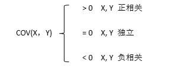
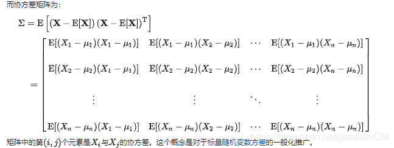
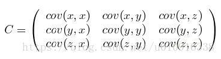
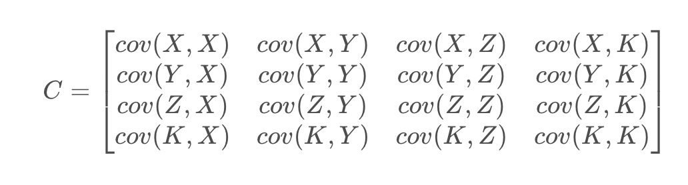
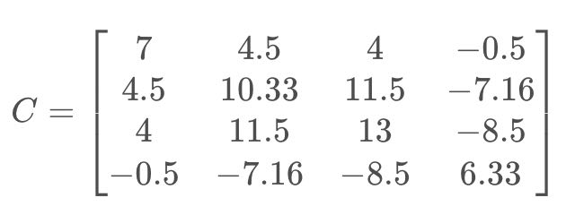

期望值、方差、协方差、相关系数¶
文章目录
期望值、方差、协方差、相关系数
- 一、期望值
- 二、方差
- 三、协方差
- 四、协方差矩阵
- 五、协方差的相关系数
- 六、numpy 计算均值、方差、标准差
一、期望值¶
在概率论和统计学中，数学期望(mean)（或均值，亦简称期望）是试验中每次可能结果的概率乘以其结果的总和，是最基本的数学特征之一。它反映随机变量平均取值的大小。
需要注意的是，期望值并不一定等同于常识中的“期望”——“期望值”也许与每一个结果都不相等。期望值是该变量输出值的 加权平均 。期望值并不一定包含于变量的输出值集合里。
大数定律规定，随着重复次数接近无穷大，数值的算术平均值几乎肯定地收敛于期望值。
- 离散情况：
E(X) = ΣPi * Xi
例如，掷一枚公平的六面骰子，其每次“点数”的期望值是3.5，计算如下：
| X | 1 | 2 | 3 | 4 | 5 | 6 |
|---|---|---|---|---|---|---|
| P(x) | 1/6 | 1/6 | 1/6 | 1/6 | 1/6 | 1/6 |
E(X) = 1 * ⅙ + 2 * ⅙ + 3 * ⅙ + 4 * ⅙ + 5 * ⅙ + 6 * ⅙ = 3.5
- 连续情况：
如果X是连续的随机变量，存在一个相应的概率密度函数 f(x)，则X的期望值为：
E[X] = ∫x f(x) dx
二、方差¶
1. 概念：¶
在概率论和统计学中，方差是衡量随机变量或一组数据离散程度的度量。
概率论中方差用来度量随机变量和其 数学期望（即均值）之间的偏离程度 。统计中的方差（样本方差）是每个样本值与全体样本值的 平均数之差的平方值的平均数 。在许多实际问题中，研究方差即偏离程度有着重要意义。
方差是衡量源数据和期望值相差的度量值。
1. 在统计描述中，方差用来计算每一个变量（观察值）与总体均数之间的差异。为避免出现离均差总和为零，离均差平方和受样本含量的影响，统计学采用平均离均差平方和来描述变量的变异程度。
总体方差 计算公式：
σ2=∑(X-μ)2 / N
X为变量，μ为总体均值，N为总体例数。
实际工作中，总体均数难以得到时，应用样本统计量代替总体参数，经校正后， 样本方差 计算公式：
S2= ∑(X - A)2 / （n-1）
S2为样本方差，X为变量，A为样本均值，n为样本例数。
2. 在概率分布中，离散型随机变量方差计算公式：
D(X) = E{[X-E(X)] ^ 2} = E(X ^ 2) - [ E(X)]^2
D(X)称为变量X的方差，而 σ = D(X)(½) 称为 标准差（或均方差） 。
方差刻画了随机变量的取值对于其数学期望的离散程度。（标准差、方差越大，离散程度越大）
若X的取值比较集中，则方差D（X）较小，若X的取值比较分散，则方差D（X）较大。
因此，D（X）是刻画X取值分散程度的一个量，它是衡量取值分散程度的一个尺度。
2. 示例：¶
如 X 样本为：5、6、9、16，则 X 的方差计算如下为：
先求 X 的平均数为 （5+6+9+16）/ 4 = 9
总体方差 = （(5-9)2+(6-9)2+(9-9)2+(16-9)2）/ 4 = 18.5
样本方差 = （(5-9)2+(6-9)2+(9-9)2+(16-9)2）/ （4-1） = 24.667
三、协方差¶
1. 概念：¶
协方差（Covariance）在概率论和统计学中用于衡量 两个变量 的总体误差。而方差是协方差的一种特殊情况，即当两个变量是相同的情况（方差是衡量一个变量之间的离散程度）。
期望值分别为E(X) = u 与 E(Y) = ν 的两个实随机变量 X 与 Y 之间的协方差定义为：
COV(X，Y) = E[(X-E(X))(Y-E(Y))] = E(XY) - 2E(X)E(Y) + E(X)(Y) = E(XY) - uv
也可以用平均值来计算协方差：
Cov(X,Y)=1/（N−1）∑(Xi−Xi_)(Yi−Yi_)
Xi_,Yi_为平均值。这里，之所以除以 N-1 而不是 N 的原因是对总体样本期望的无偏估计。

直观上来看，协方差表示的是两个变量总体误差的方差，这与只表示一个变量误差的方差不同。如果两个变量的变化趋势一致，也就是说如果其中一个大于自身的期望值，另外一个也大于自身的期望值，那么两个变量之间的协方差就是正值。 如果两个变量的变化趋势相反，即其中一个大于自身的期望值，另外一个却小于自身的期望值，那么两个变量之间的协方差就是负值。
如果X与Y是统计独立的，那么二者之间的协方差就是0，反之则不成立
2. 示例：¶
X,Y的变量取值如下：
| 变量 | |||
|---|---|---|---|
| X | 1 | 5 | 6 |
| Y | 4 | 3 | 9 |
求解X,Y的协方差过程如下：
- X的均值为Xi_：(1+5+6) / 3 = 4
Y的均值为Yi_：(4+3+9) / 3 = 16/3 - 协方差 Cov(X,Y) = 1/（N−1）∑(Xi−Xi_)(Yi−Yi_) = ( (1-4) * (4-16/3) + (5-4) * (3-16/3) + (6-4) * (9-16/3) ) / (3-1) = 4.5
(numpy源码中也是使用这种方式来计算协方差的)
注：
X方差 Var(X,X) = ( (1-4) * (1-4) + (5-4) * (5-4) + (6-4) * (6-4) ) / (3-1) = 7
可以看出协方差与方差的区别和联系。
四、协方差矩阵¶
1. 概念：¶
协方差也只能处理二维问题，那维数多了自然就需要计算多个协方差，比如n维的数据集就需要计算 n! / ((n-2)!2) 个协方差，那自然而然的我们会想到使用矩阵来组织这些数据。
在统计学与概率论中， 协方差矩阵* （也称离差矩阵、方差-协方差矩阵）是一个矩阵，其 i, j 位置的元素是第 i 个与第 j 个随机变量之间的协方差。这是从标量随机变量到高维度随机向量的自然推广。
给出协方差矩阵的定义：
假设 X 是以 n 个随机变数组成的列向量，
X = [ X(1), X(2), . . . X (n)]
并且并且 μi 是 Xi 的期望值，即 μi = E(Xi)。
协方差矩阵的第 (i,j) 项（第 (i,j) 项是一个协方差）被定义为如下形式：
∑ij = Cov(Xi,Xj) = E[(Xi - μi)(Xj - μj)T]
协方差矩阵完整形式：

这个定义还是很容易理解的，我们可以举一个简单的三维的例子，假设数据集有三个维度，则协方差矩阵为：

可见，协方差矩阵是一个对称的矩阵，而且对角线是各个维度上的方差。
2. 示例：¶
X,Y,Z,K的变量取值如下：
| 变量 | |||
|---|---|---|---|
| X | 1 | 5 | 6 |
| Y | 4 | 3 | 9 |
| Z | 4 | 2 | 9 |
| K | 4 | 7 | 2 |
所以协方差矩阵C为：

每一个协方差的求解过程为：
协方差 Cov(X,Y) = 1/（N−1）∑(Xi−Xi_)(Yi−Yi_) = ( (1-4) * (4-16/3) + (5-4) * (3-16/3) + (6-4) * (9-16/3) ) / (3-1) = 4.5
最终的协方差矩阵为：

五、协方差的相关系数¶
1. 概念：¶
相关关系是一种非确定性的关系，相关系数是研究变量之间线性相关程度的量。
为了准确得到变量之间的相似程度，我们需要把协方差除以各自变量的标准差。这样就得到了相关系数的表达式：
r(X,Y) = Cov(X,Y) / (σX σY)
可见，相关系数就是在协方差的基础上除以变量 X 和 Y 的标准差。
为什么除以各自变量的标准差就能消除幅值影响呢？
这是因为标准差本身反映了变量的幅值变化程度，除以标准差正好能起到抵消的作用，让协方差标准化。这样，相关系数的范围就被归一化到 [-1,1] 之间了。
相关系数大于零，则表示两个变量正相关，且相关系数越大，正相关性越高；
相关系数小于零，则表示两个变量负相关，且相关系数越小，负相关性越高；
相关系数等于零，则表示两个变量不相关。
回过头来看一下协方差与相关系数的关系，其实，相关系数是协方差的标准化、归一化形式，消除了量纲、幅值变化不一的影响。实际应用中，在比较不同变量之间相关性时，使用相关系数更为科学和准确。协方差在机器学习的很多领域都有应用，而且非常重要！
2. 示例：¶
X,Y的变量取值如下：
| 变量 | |||
|---|---|---|---|
| X | 1 | 5 | 6 |
| Y | 4 | 3 | 9 |
求解X,Y的协方差过程如下：
- 协方差 Cov(X,Y) = 1/（N−1）∑(Xi−Xi_)(Yi−Yi_) = ( (1-4) * (4-16/3) + (5-4) * (3-16/3) + (6-4) * (9-16/3) ) / (3-1) = 4.5
- X的标准差 σX = 71/2
Y的标准差 σY = 10.331/2 - 相关系数 r(X,Y) = 4.5 / (71/2 * 10.331/2) = 0.529
六、numpy 计算均值、方差、标准差¶
- 计算方差时，numpy 中的 var 函数，默认是总体方差（计算时除以样本数 N），若需要得到样本方差（计算时除以 N - 1），需要参数 ddo f= 1
- 计算协方差和相关系数时，numpy 返回的结果是协方差 / 相关系数的矩阵形式
1 2 3 4 5 6 7 8 9 10 11 12 13 14 15 16 17 18 19 20 21 22 23 24 25 26 27 28 29 30 31 32 33 34 35 36 37 38 39 40 41 42 | |
运行结果：
1 2 3 4 5 6 7 8 9 10 11 12 13 14 15 16 17 18 19 20 21 | |
参考资料：
- 维基百科：
https://zh.wikipedia.org/zh-cn/%E7%9B%B8%E5%85%B3 - 博客：
https://blog.csdn.net/YPP0229/article/details/100519343
凡本网注明"来源：XXX "的文/图/视频等稿件，本网转载出于传递更多信息之目的，并不意味着赞同其观点或证实其内容的真实性。如涉及作品内容、版权和其它问题，请与本网联系，我们将在第一时间删除内容！
作者: pentiumCM
来源： https://blog.csdn.net/pentiumCM/article/details/103603757